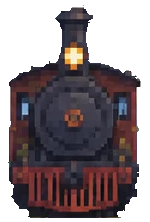
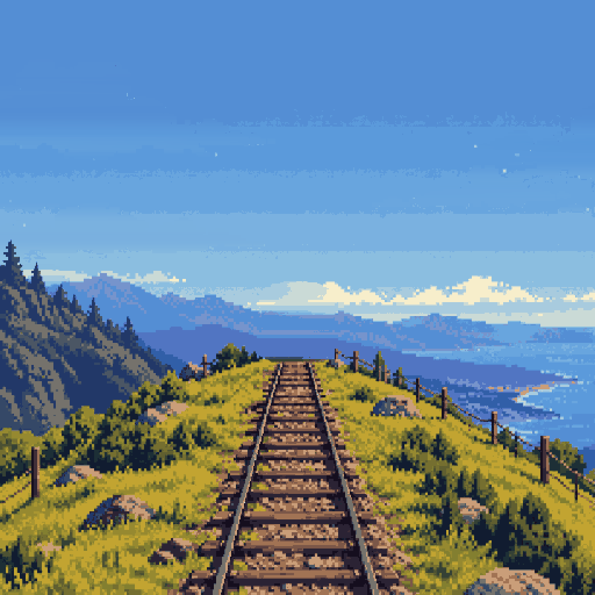
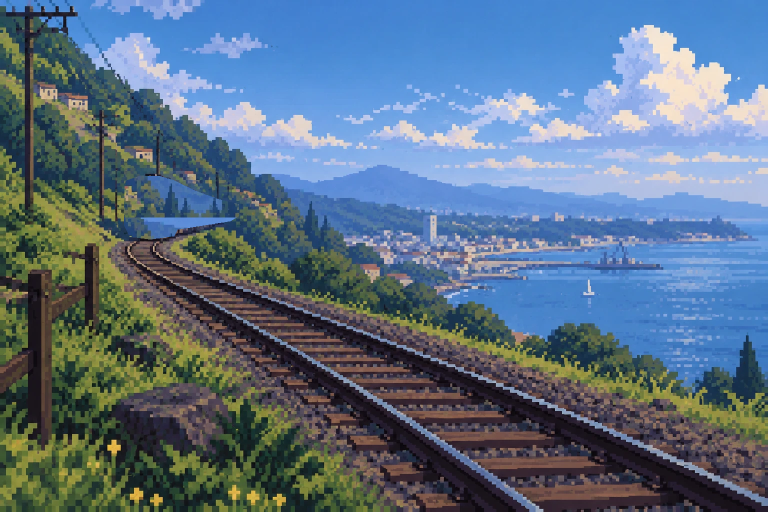
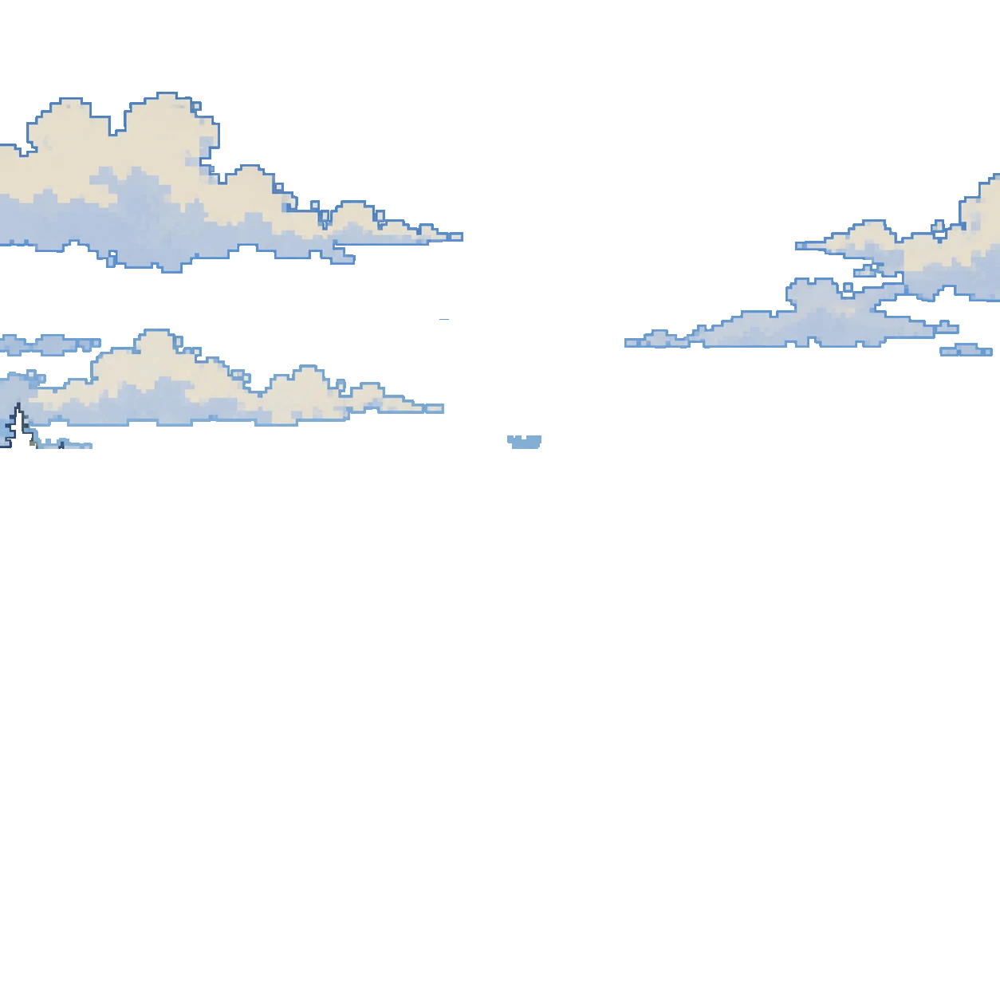

Me interesa cómo se explica la mente: la filosofía de la ciencia cognitiva, la explicación mecanicista, la fenomenología y la mente extendida.
Qué me interesa
Pienso la mente como algo que se explica con mecanismos, se vive en primera persona y se extiende hacia el cuerpo y las cosas que usamos. Esta página reúne esas preguntas y los juegos de lógica, metafísica, falacias y ajedrez que he hecho.
Filosofía de la ciencia cognitivaSe pregunta qué hace una ciencia de la mente cuando explica: qué cuenta como un buen modelo, cómo se relacionan la psicología, la neurociencia y la computación, y hasta qué punto una teoría sobre cómo se procesa la información dice algo de lo que es pensar.
Explicación mecanicistaExplicar un fenómeno es mostrar el mecanismo que lo produce: sus partes, lo que hacen y cómo están organizadas. En la mente eso lleva a buscar qué componentes del cerebro y del cuerpo hacen posibles la memoria o la atención, y a discutir cuándo una descomposición en partes deja de aclarar algo.
FenomenologíaParte de cómo se vive la experiencia en primera persona: la percepción, el cuerpo propio, el tiempo vivido. Pone a prueba a las explicaciones científicas con una pregunta incómoda, qué se deja fuera cuando se describe la mente solo desde afuera, y obliga a cuidar el vocabulario.
Mente extendidaPropone que los procesos cognitivos no terminan en el cráneo: un cuaderno, una herramienta o un mapa pueden formar parte de la forma en que se piensa. Lo que se discute es dónde poner el límite de lo mental y qué criterios permiten decir que algo cuenta como parte de la mente.
Álbum de la colina

Blogs
Todavía no hay entradas. Las notas sobre filosofía de la ciencia cognitiva y mente extendida van a aparecer aquí.

FAQ
¿Qué es esta página? Una página personal en pixel art: un tren llega por la colina, la pantalla se quiebra y aparece la descripción de mis intereses filosóficos.
¿De qué temas trata? De filosofía de la ciencia cognitiva, explicación mecanicista, fenomenología y mente extendida.
¿Puedo saltar la animación del tren? Sí, con el botón Saltar. Si tu sistema pide movimiento reducido, la animación no se reproduce.
¿Se oye algo? Sí. El sonido del tren se sintetiza en el navegador y hay un botón para silenciarlo mientras corre la animación.
¿Cambia según la hora? Sí. La escena es de día, de atardecer o de noche según el reloj de tu navegador.
¿Qué tipografías usa? Courier Prime para los títulos y el texto, y Caveat para los pies de las fotos, ambas de Google Fonts. La cinemática usa Press Start 2P.
¿Qué son los otros repositorios? Juegos y herramientas de lógica, falacias, metafísica y ajedrez. Están listados más abajo.
¿Dónde está el código? En el repositorio ontoterrorist/ontoterrorista de GitHub. No usa dependencias: canvas para la imagen y WebAudio para el sonido.
Animaciones
La primera animación es la llegada del tren. A los 0 segundos asoma por la cresta; a los 3 llega y se quiebra la pantalla. Puedes verla de nuevo cuando quieras.
Repositorios
- logicatableaux de lógicas no clásicas
- logic-tableauxárboles de lógica, en español
- logica-axiomaticacálculo de Hilbert, hasta Gödel
- logica-advancededucción natural estilo Fitch
- falacia-advancedetectar falacias
- metafisica-advancerol para aprender metafísica
- analisis-ajedrezpartidas con Stockfish
- entrenador-pgnrepertorio con repetición espaciada
- ontoterroristaesta página